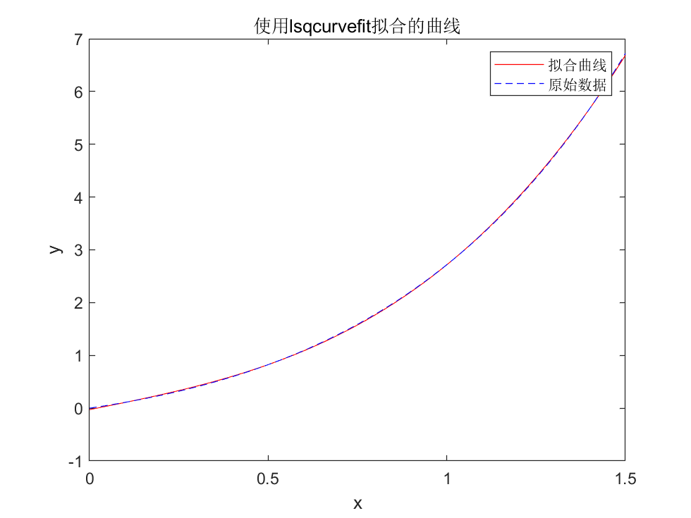
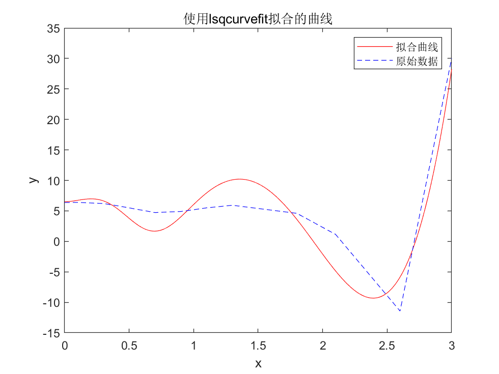
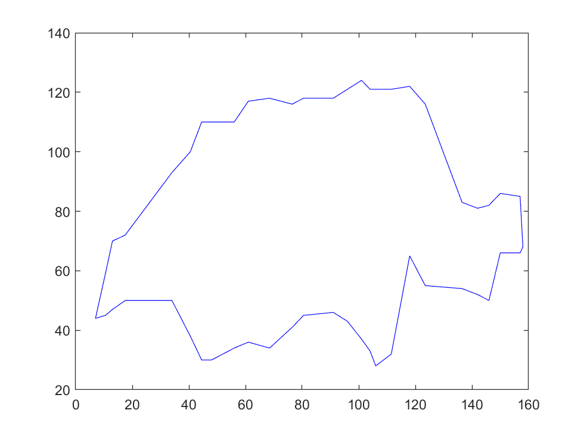

Matlab第十二周拟合问题
Matlab选修作业记录（其他的简介懒得写了/2025-01-25/）
北邮Matlab选修 Week 12 拟合
拟合函数
问题描述
设$f(x)=xe^x,x \in [0,1.5]$，求$f(x)$的三次近似最佳平方逼近多项式。
程序设计
%question1.m
x0=[10;10;10;10];%初始参数猜测值
xdata=linspace(0,1.5,5000);%生成x数据点
ydata=xdata.*exp(xdata);%生成对应的y数据点
%定义函数模型
fun=@(x,xdata)x(1)*xdata.^3+x(2)*xdata.^2+x(3)*xdata+x(4);
[x,resnorm]=lsqcurvefit(fun,x0,xdata,ydata);
%打印出拟合的参数
disp(['拟合的参数:a=',num2str(x(1)),',b=',num2str(x(2)),',c=',num2str(x(3)),',d=',num2str(x(4))]);
disp(['拟合的方程:',num2str(x(1)),'*x^3+',num2str(x(2)),'*x^2+',num2str(x(3)),'*x+',num2str(x(4))]);
%绘制图形
plot(xdata,fun(x,xdata),'r-',xdata,ydata,'b--');
%添加图例和标题
legend('拟合曲线','原始数据');
title('使用lsqcurvefit拟合的曲线');
xlabel('x');
ylabel('y');
计算结果
>> question1
拟合的参数:a=1.3877,b=-0.0047124,c=1.3623,d=-0.028475
拟合的方程:1.3877*x^3+-0.0047124*x^2+1.3623*x+-0.028475

计算参数
问题描述
已知一组观测数据$(x_i,y_i)$见下表，函数的原型为$y=a_1+a_2x^2+a_3e^{-5x^3}+a_4cos(-2x)+a_5x^4$，试用所给数据求出待定系数$a_i$的值。
| $x_i$ | $y_i$ | $x_i$ | $y_i$ |
|---|---|---|---|
| 0 | 6.3700 | 1.1 | 5.4941 |
| 0.1 | 6.3888 | 1.3 | 5.9187 |
| 0.3 | 6.2056 | 1.8 | 4.5944 |
| 0.4 | 5.8676 | 2.1 | 1.1440 |
| 0.7 | 4.7256 | 2.6 | -11.4326 |
| 0.9 | 4.8990 | 3.0 | 30.0009 |
| 0.95 | 5.0383 |
程序设计
%question2.m
x0=[10;10;10;10;10];%初始参数猜测值
x1=linspace(0,3,5000);%生成x数据点
xdata=[0;0.1;0.3;0.4;0.7;0.9;0.95;1.1;1.3;1.8;2.1;2.6;3.0];%生成x数据点
ydata=[6.3700;6.3888;6.2056;5.8676;4.7256;4.8990;5.0383;5.4941;5.9187;4.5944;1.1440;-11.4326;30.0009];%生成对应的y数据点
%定义函数模型
fun=@(x,xdata)x(1)+x(2)*xdata.^2+x(3)*exp(-5*xdata.^3)+x(4)*cos(-2*xdata)+x(5)*xdata.^4;
[x,resnorm]=lsqcurvefit(fun,x0,xdata,ydata);
%打印出拟合的参数
disp(['拟合的参数:a1=',num2str(x(1)),',a2=',num2str(x(2)),',a3=',num2str(x(3)),',a4=',num2str(x(4)),',a5=',num2str(x(5))]);
%绘制图形
plot(x1,fun(x,x1),'r-',xdata,ydata,'b--');
%添加图例和标题
legend('拟合曲线','原始数据');
title('使用lsqcurvefit拟合的曲线');
xlabel('x');
ylabel('y');
计算结果
>> question2
拟合的参数:a1=9.4777,a2=-16.5136,a3=22.4145,a4=-25.3911,a5=2.3676

面积计算
问题描述
已知欧洲某个国家的地图如下图所示，为了计算出它的国土面积，首先对地图进行如下测量：以由西向东方为$x$轴，由南向北方为$y$轴，选择方便的原点，并将从最西边界点到最东边界点在$x$轴上的区间适当的分成若干段，在每个点的$y$方向测出南边界点和北边界点的$y$坐标$y_1$和$y_2$，这样就得到了表中所示的测量数据（单位：mm）。

| $x$ | $y_1$ | $y_2$ | $x$ | $y_1$ | $y_2$ | $x$ | $y_1$ | $y_2$ |
|---|---|---|---|---|---|---|---|---|
| 7.0 | 44 | 44 | 61 | 36 | 117 | 111.5 | 32 | 121 |
| 10.5 | 45 | 59 | 68.5 | 34 | 118 | 118 | 65 | 122 |
| 13.0 | 47 | 70 | 76.5 | 41 | 116 | 123.5 | 55 | 116 |
| 17.5 | 50 | 72 | 80.5 | 45 | 118 | 136.5 | 54 | 83 |
| 34 | 50 | 93 | 91 | 46 | 118 | 142 | 52 | 81 |
| 40.5 | 38 | 100 | 96 | 43 | 121 | 146 | 50 | 82 |
| 44.5 | 30 | 110 | 101 | 37 | 124 | 150 | 66 | 86 |
| 48 | 30 | 110 | 104 | 33 | 121 | 157 | 66 | 85 |
| 56 | 34 | 110 | 106 | 28 | 121 | 158 | 68 | 68 |
数学模型
事实上，由图像不难看出，该国家的国土面积实际上是由$y_1=f_1(x)$和$y_2=f_2(x)$两条曲线包围起来的。因此，我们只需要求解$f_1(x)$和$f_2(x)$，然后通过积分$\int\limits_{7.0}^{56}(f_2(x)-f_1(x))dx $就可以得到。
程序设计
%question3.m
%定义初始值
x=[7.0,10.5,13.0,17.5,34,40.5,44.5,48,56,61,68.5,76.5,80.5,91,96,101,104,106,111.5,118,123.5,136.5,142,146,150,157,158];
y1=[44,45,47,50,50,38,30,30,34,36,34,41,45,46,43,37,33,28,32,65,55,54,52,50,66,66,68];
y2=[44,59,70,72,93,100,110,110,110,117,118,116,118,118,121,124,121,121,121,122,116,83,81,82,86,85,68];
%定义微分间隔
d=0.01;
dx=7:d:158;
%插值
y1_=interp1(x,y1,dx,'linear');
y2_=interp1(x,y2,dx,'linear');
s=sum(y2_-y1_)*d/18^2*1600;
%输出结果
fprintf('The sum of the differences between the two curves is %.2f km^2\n',s);
plot(x,y1,'b',x,y2,'b');
计算结果
>> question3
The sum of the differences between the two curves is 42414.81 km^2

最后修改于 2024-08-05